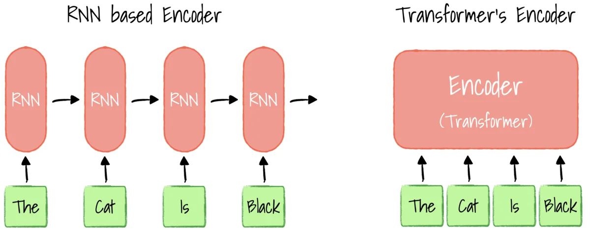
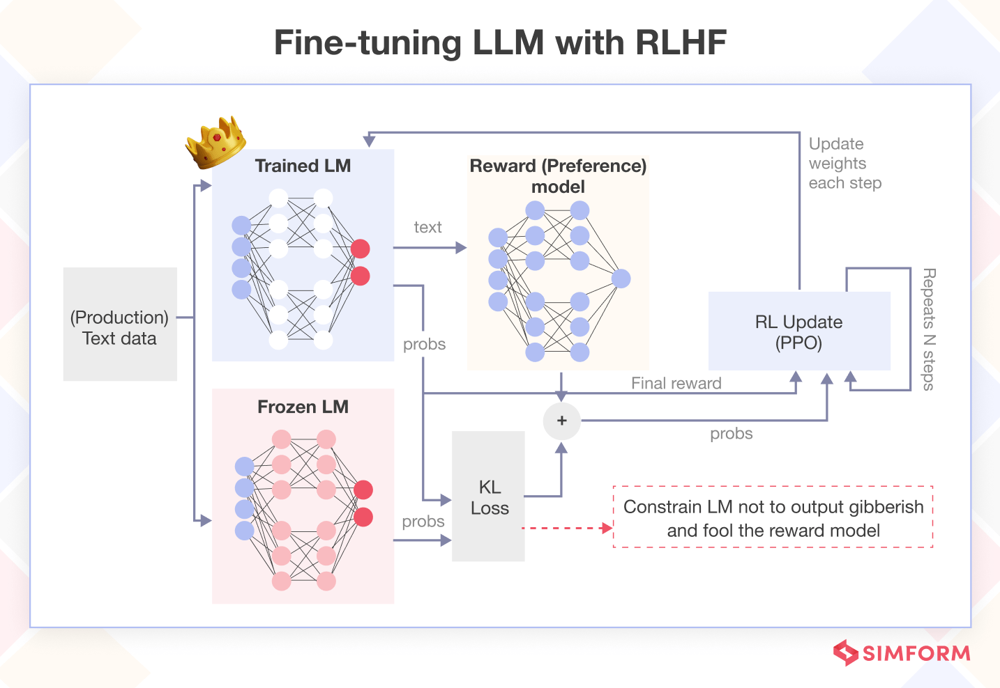

LLMs and Reasoning
One prominent problem in AI was the problem of sequence transduction (the ability of models to reason on sequential information). The groundbreaking paper "attention is all you need" by Deepmind in [Date] indentified three key bottlenecks in prior models the handing of long contexts and speed. Take one of the most common sequence transduction problems: language modeling. In order for a model to predict the next word or letter in a phrase accurately it needs to properly encode the information from in the context. In addition, it has to be fast and efficient otherwise it would both be timeconsuming to train and less useful due to the higher cost to run when finished training. Thus, the team at deepmind proposed a new framework, known as the transformers. With better context retention and being more parallelizable (and faster as result).

However, even with their new framework the complexity of language made translation and early language models terrible. For language modeling specifically, a model would need to be able to accurately understand tens of thousands of words how each those words are related across paragraphs.
But seeing promise in the research, researchers at OpenAI released the gpt (generative pre-trained transformers) series where they progresivly increase the size of the model.
Eventially Open AI released gpt 3.5, the most accurate language model at the time. Satisfied with its quaility, they came up with the idea to make it into a chatbot. To achieve this is much harder to achieve than at first glance.
They first provide a system prompt, which essentially can be thought of instructions for the model: who it was, how should it behave, the format which it output it responses. Then they fine tune the model through a process known as RLHF (reinforcement learning with human feedback) to make the language model more friendly and helpful.
Actual System Prompt used by Anthropic for Claude Haiku 3:
The assistant is Claude, created by Anthropic. The current date is {{currentDateTime}}.
Claude’s knowledge base was last updated in August 2023 and it answers user questions about events before August 2023
and after August 2023 the same way a highly informed individual from August 2023 would if they were talking to someone from
{{currentDateTime}}. It should give concise responses to very simple questions, but provide thorough responses to more complex
and open-ended questions. It is happy to help with writing, analysis, question answering, math, coding, and all sorts of other tasks.
It uses markdown for coding. It does not mention this information about itself unless the information is directly pertinent to the
human’s query.
[RLHF process]
Signs of Intelligence?
When their chatbot Chatgpt released, user saw glimpses of intelligence in its answers. This was an incredible surprising outcome for many. Somehow these language models learned to reason or at least appeared to have. One likely explanation is that in the model trying to predict humans accurately they developed an internal model of reasoning. See a path forwards all the major AI labs rushed amply to the ability of language models to reason. There were two main methods for extracting the reasoning capability of language models, fine tuning, and prompting. Because the base of these language models are designed to predict the next token they are heavily context dependent. If you treat the model like it is a professor of mathematics, it is more likely to act more like a professor. Exploiting this feature, a paper called (find paper), added the string “think it through step by step” to language models and found that it improved its performance in mathematical, logical, and scientific tasks. The other method was using reinforcement learning to modify the model itself to encourge this behavior. RLHF and RLVR are some of the tools used. Some researchers even hoped that these tools could teach new and novel behavior into the models.